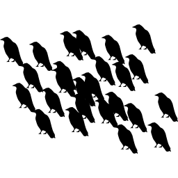

Prologue
The all-mighty Cloud is indeed a wonder, maester to the largest collection of scrolls, wares, and mummery in the world. Today's striplings yawn to hear this, but it is queer that such a powerful presence has been taken for granted in a single generation. Since it is the striplings that will steer the course of the Cloud, and not the crones, it is of a profit to reckon the runes.
What dark power spins the great Web? Even a cub in his cups can admit of a sort of schooling in networking: Browsers "talk" to websites, and websites "talk" back. Talk is usually text, though it somehow manages pictures, documents, and music. The trick is to realize that everything's bits, and bits are like to talk.
The Web in its essence is a cabal of maesters, too remote or craven to gather in person. Rather, they convene their secret meetings by ravens. When a maester wants to speak far, he chops his message into several bits and distributes the bits across several ravens, each able to carry a small packet from a source, mayhaps the Wall, down all the way to a destination like King's Landing. There, a maester relieves the ravens of their packets, and assembles the bits into the original message.
For truly remote destinations such as Dragonstone, or Qarth to the east, the maester may hurry the ravens to the next hop of the journey without taking the time reading the message himself. The ravens don't travel with a specific path in mind, rather the maesters route them to a hop ever closer to their final destination.

We netizens take it for granted that the Internet has no down time: the Web operates every hour of every day of every year. Its remarkable resilience is due to this very model of decentralized communication. If a maester takes ill or a raven gets lost, the packet can be resent with a new raven, routed along a new trail of maesters.
There be Grumkins
The maesters weave their Web not for love or coin, but for the good of the realm. Generally, maesters are not themselves the senders or receivers of these messages. Instead, the maesters are used to signal darker, more abstract messages between grumkins.
Grumkins are various and sundry. Some are like to gossip of comings and goings of popular lords and ladies. Some tell of weather patterns. A grumkin even serves to tell of grumkinness, messages that would only make a grumkin sort of sense. When wizards speak of HTTP and POP3, of FTP and BitTorrent, each of these is a grumkin. HTTP grumkins speak of HTML, of web pages. POP3 grumkins speak of emails. FTP grumkins speak of files, and BitTorrent grumkins speak long, garrolous tales of huge files and caches of a thousandfold files.
Grumkins are highly specialized, and highly regimented (perhaps that is why they are so feared). A beefy Server grumkin hosts a conversation with hundreds of small Client grumkins, parlaying with each in turn. When a website is unusually slow or unresponsive, it is often due to a massive host of Client grumkins all clamoring for parlay with the Server.
As with maesters, grumkins are themselves used to send more abstract messages. As grumkins sit atop maesters, applications sit atop grumkins, sometimes with several gooey layers of grumkin in between. Middling grumkins haggle over bandwidth: "Send it faster!" "Slow down now, I can't keep up." "Bugger all, we've been disconnected!"
When an application wants to talk to another application far and away, it signals down the line of grumkins, across a rush of ravens, and back up another grumble of grumkins, 'till it reaches the top of that pile and the second application finally receives the message. This same back-and-forth happens every time an instant message is sent, a file downloaded.
Conclusion
Aye, grumkins may not exist. But the innerworkings of the Web are sufficiently complex that they might as well be grumkin magic. And anyway, the model of grumkin-atop-grumkin, shouting down and squawking across the ravens, and shouting back up yet more grumkins, is more or less how the Internet works. It's called the protocol stack.